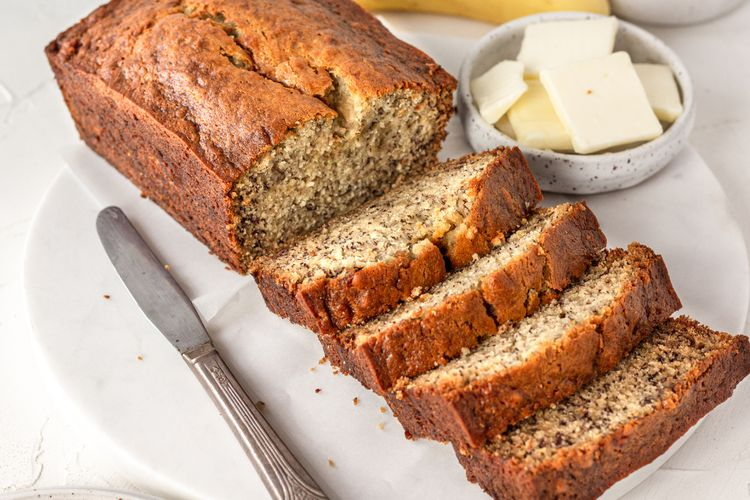

This banana bread has been the most popular recipe on Simply Recipes for over 10 years. Thousands of people make it every day. Why?
Because it really is the best banana bread recipe, period. You can mix everything in one bowl, you can vary the amount of sugar or bananas. And the secret to its great flavor? Melted butter.

Prep Time
Cook Time
Total Time
Servings
Yield
10 mins
60 mins
70 mins
8 to 10 servings
1 loaf
Ingredients
2 to 3 medium (7" to 7-7/8" long) very ripe bananas, peeled (about 1 1/4 to 1 1/2 cups mashed)
1/3 cup (76g) butter, unsalted or salted, melted
1/2 teaspoon baking soda (not baking powder)
1 pinch salt
3/4 cup (150g) sugar (1/2 cup if you would like it less sweet, 1 cup if more sweet)